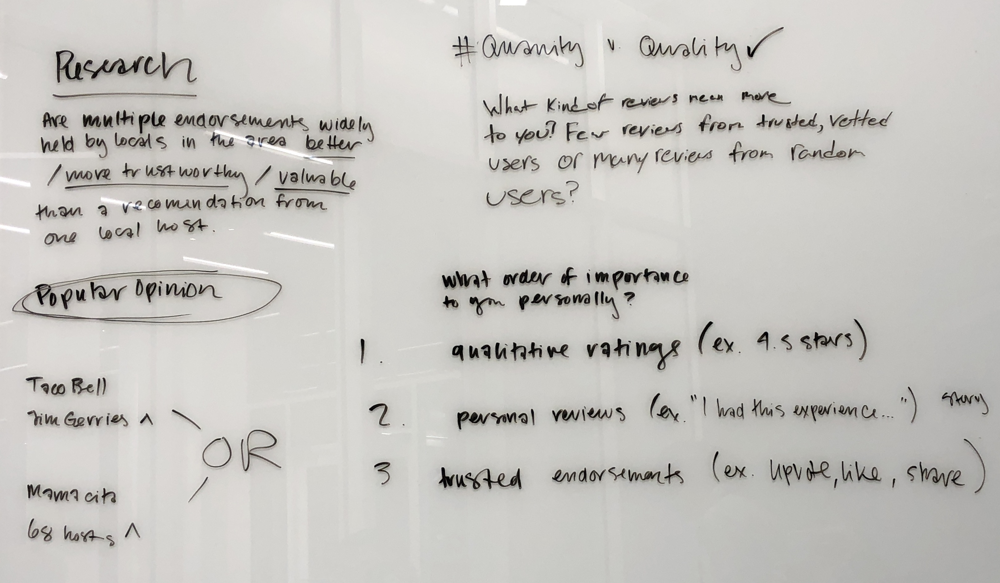
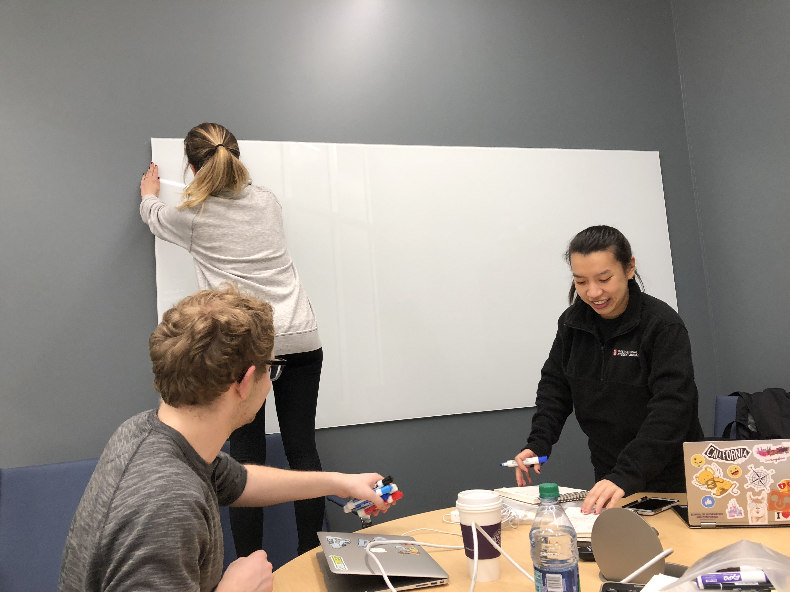
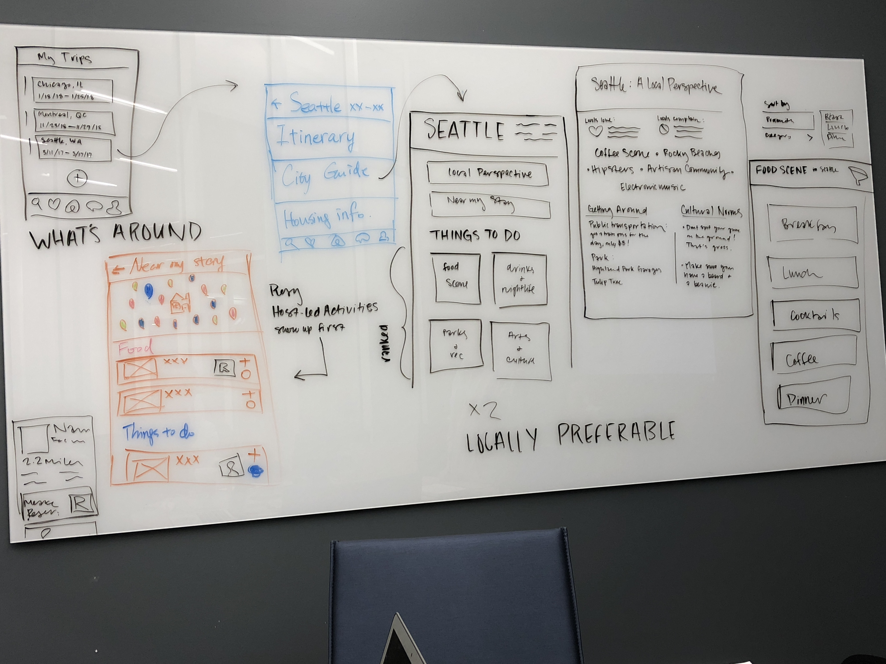
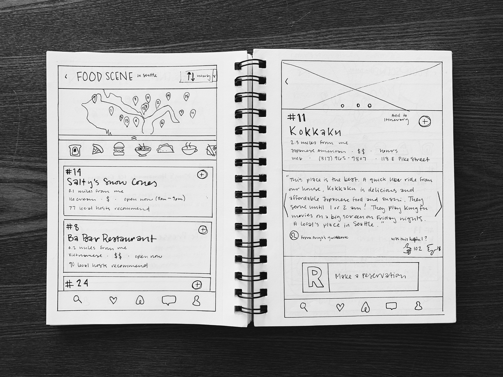
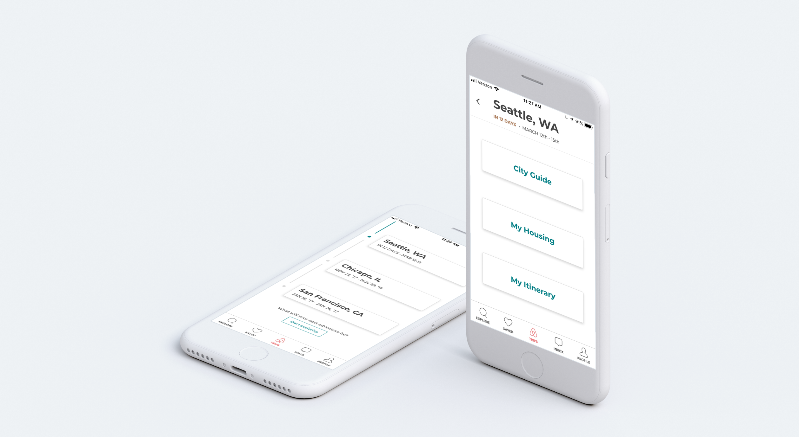
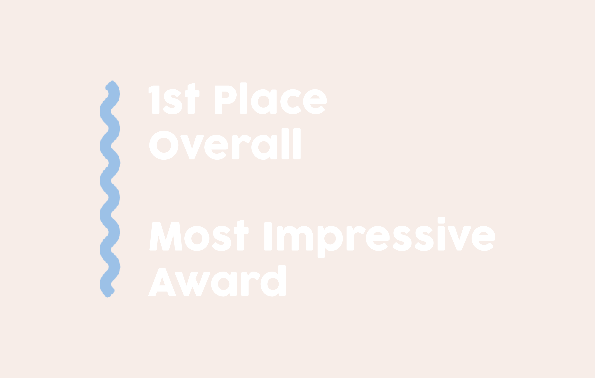

Airbnb has a desire to build a “smart travel companion” experience in their mobile app. The challenge is to discover what the traveler needs in order to enjoy the trip that they have booked and how Airbnb can care for them throughout. The solution needs to balance the business needs of booking more trips with the user needs of enjoying those trips. Its utility will be found both in pre-trip planning and on-trip guidance.

These notes include some of our insights and subsequent research questions from a team meeting.

My team members and I often solved problems by processing them visually on the whiteboard.

We also used whiteboards to sketch through a few initial wireframes and discuss the essential components of each UI.
Recommendation & Rational
Planning a trip is an experience filled with excitement and anticipation. But it can also be one filled with uncertainty. When planning a trip, many travelers ask personal friends who live in or have visited their destination for personal recommendations. There is a need to humanize the planning process, so my team and I decided to do so in the form of a Smart Travel Companion that provides insider knowledge of a new place in the form of personal recommendations.
For Airbnb, a “good trip” means ensuring unique and authentic experiences for their guests. To this end, Airbnb already collects recommendations from local hosts to display in the featured host guidebooks on the website. Based on our interviews, it is clear that travelers value local perspectives because they know better than anybody else about unique and authentic things to do and experience. Making these recommendations more easily accessible builds trust among users and hosts and allows for travelers to live like a local in a new city.

Sketching wireframes for the Food Scene category of the City Guide
We developed a City Guide experience for the Airbnb mobile application that helps travelers discover local and authentic restaurants and activities. The City Guide is incorporated into the existing “Trips” section of the main navigation, where they can view all of their Airbnb bookings, both previous and upcoming. From there, the user will select a trip, in this case an active trip to Seattle.
Located inside each Trip is a menu of information regarding plans for that specific location. My Itinerary, City Guide, and My Housing are features accessible here. My Itinerary and My Housing Info are both features that we would like to see implemented as we think they have great utility but ultimately our design is focused on the City Guide because it the most important solution for the problem we chose to focus on.

Trips User Interfaces
The main aspect of our solution is incorporated here, in the City Guide. The user will come to the Things to Do page, where they can categorically explore suggested activities to fill their trip itinerary with. Local Perspectives, a feature we considered for future iterations, is also accessible from this page.
Seattle City Guide User Interface
Each category contains an ordered list of the top recommended establishments and experiences by local hosts in that category. We found through our initial interviews that people often make plans through spur of the moment decisions and are more flexible with their itinerary. We added an option to sort the recommendations by “nearby my stay” and “nearby me”, in addition to the default “ranking” system. All the same results will be displayed, the only difference is the order of the list, based on the user’s preference. Since our target group are the users that have already booked lodging through Airbnb, this feature allows them to easily discover local hotspots while they are currently on the trip, as well as in advance.
On each individual experience page, the user can read personal reviews from local hosts. The host recommendation section housed on the experience profile page scrolls horizontally to view more reviews. Additionally, a user can vote thumbs up or thumbs down for each review. The reviews that are voted as being the most helpful will display first. Experiences can be added to My Itinerary from this page, and reservations can also be placed in-app through a partnership with Resy.
Food Scene and Establishment User Interfaces
Impact
Through our solution of local host-curated City Guides, we hoped to give travelers the opportunity to experience a new place from the perspective of the people who most closely know and love that particular city. Travelers will use it to find the local hotspots and the most popular things to do in that city, by local standards, which validates and provides the authenticity that many Airbnb travelers crave.
My team and I worked hard to get to the heart of the presented challenge. What is it that travelers need in order to enjoy a trip once they have booked it? How can Airbnb help them most authentically interact with and discover a new place? We felt strongly that our research was leading us towards harnessing the power of local recommendations. Once we had established this, the rest of the pieces more or less fell into place. We were so directed by our vision, that many other consequential decisions seemed relatively straightforward. I was personally surprised to see how many different directions the other teams went in, even though we all stemmed from the same challenge.

Feedback from Airbnb:
“Great deliverable! Great thinking! Demonstrated how new ideas can fit into the existing structure, that's the biggest strength of this team. Crisp and clear storytelling. All around, great work!”
“I particularly liked how explicit you were in describing how your solution would fit into the existing Airbnb product. From an implementation standpoint, piggybacking off the exiting app’s IA makes a lot of sense -- we could move to a live experiment quickly here.”
“The fidelity of your designs made the work feel tangible. Nice job echoing existing Airbnb design language system patterns. I particularly liked how you leveraged tactile cards and semiotically sound iconography.”
The team was able to explain the why behind their design decisions and tie thinking back to user needs. Research driven rationale for each solution. Concepts were polished . The concept is useful for pre-trip planning as well as for on-trip guidance
"Team D’s framing of the problem AND their solution is rather different than the other teams. They went with a “guide” based solution that does meet the requirements of the original ask.. I thought the focus on trust, authenticity and the value of local recommendations was brilliant, and the prototypes well-demonstrated those principles."
Credit
This team consisted of Andrew Lillie, Qi Qi, Yixing Hu and myself. I acted as the facilitator for the team, created the wireframes and prototypes. Each member of my team conducted interviews and usability tests, helped create the design document and presentation and we all worked together on ideation and general product design through our collaborative meetings.